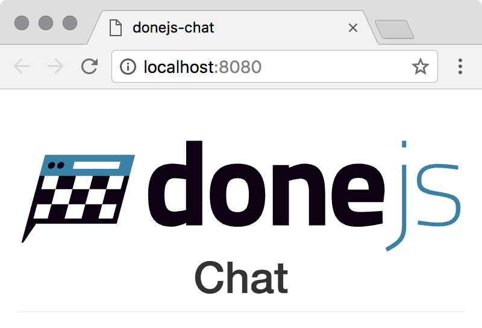
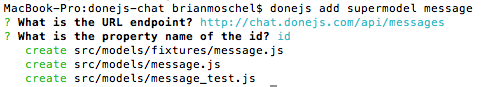
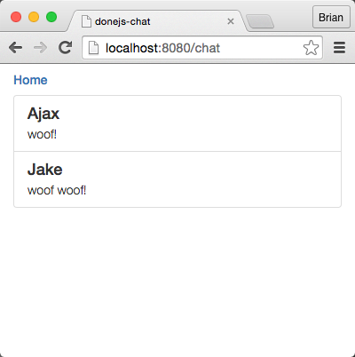
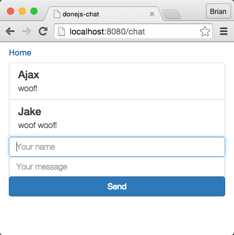
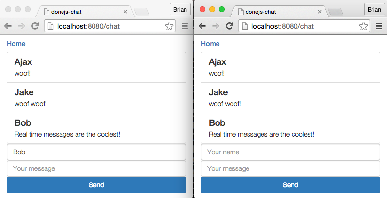
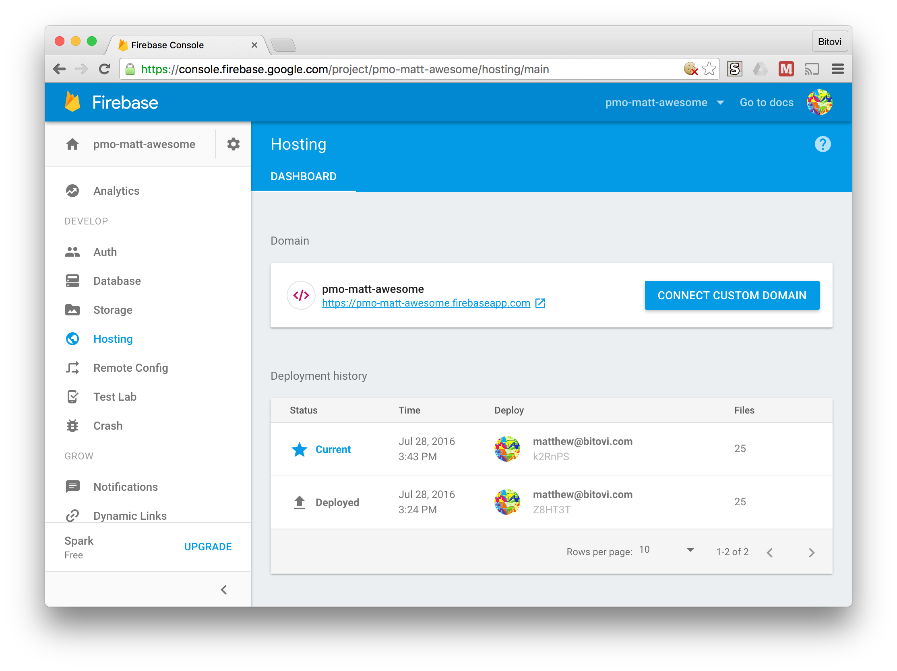

Quick start guide
In this guide, we will create chat.donejs.com, a small real-time chat application with a homepage showing a tabs widget and a messages page that lets us send and receive messages in real-time:

In the first part of this guide, we will install DoneJS, generate a new application and start a server that provides hot module swapping and server-side rendering. We will then import Bootstrap from npm, create our own custom HTML elements and set up routing between the homepage and the chat messages page. After that, we will complete both pages by adding a tabs widget to the homepage and the ability to send messages and receive real-time updates.
In the final parts of the guide we will make an optimized, progressively loaded production build and deploy it to a CDN. We will conclude with creating a mobile and desktop version of the application.
If you run into any problems, let us know on Gitter, we’re happy to help out.
For an even easier version of this guide, one that can be done entirely online, checkout CanJS’s Chat Guide. There, you'll build the same chat widget in a JS Bin, but without a mobile or desktop build and deployment to a CDN.
Similarly, if you are unfamiliar with module loading and module loaders, you may want to checkout StealJS’s Quick Start Guide before proceeding with this guide.
Setup
In this section, we will install DoneJS and generate a new application.
Install DoneJS
To get started, let’s install the DoneJS command line utility globally:
Generate the application
Then we’ll create a new DoneJS application called
donejs-chat:This will create a new folder called
donejs-chatand in it generate our application.The initialization process will ask questions like the name of your application, the source folder, etc. We’ll answer these with the default settings by hitting enter.
This will install all of DoneJS’s dependencies, including the following:
Turn on development mode
DoneJS comes with its own development server, which hosts your development files and automatically renders the application on the server. Development mode enables hot module swapping, which automatically reloads files in the browser and on the server as they change.
To start it let’s go into the
donejs-chatapplication directory:We can start development mode by running:
The default port is
8080.Go to http://localhost:8080/ to see our application showing a default homepage.
Adding Bootstrap
DoneJS makes it easy to import other projects that are published on npm. In this section, we will install and add Bootstrap to the page, and see DoneJS’s hot module swapping in action.
Install the npm package
Open a new terminal window so we can keep the DoneJS development server running. Then, install the Bootstrap npm package and save it as a dependency of our application like this:
Add it to the page
To see hot module swapping in action, let’s update the main template to import Bootstrap’s LESS file and also add some HTML that uses its styles.
Update
src/index.stacheto look like this:If you kept your browser window open at http://localhost:8080/ you should see the updated styles and content as soon as you save the file.

Feel free to edit the HTML or
src/styles.lessto see how hot module swapping updates the page automatically.Routing and components
In this part, we will create our own custom HTML elements — one for the homepage and another to display the chat messages. Then we will create routes to navigate between these two pages.
Generate custom elements
We’ll use a DoneJS generator to create custom components. The component generator is run by typing
donejs add component <file-or-folder> <component-name>.The homepage custom element (with the HTML tag name
chat-home) won't be very big or complex, so we’ll put everything into a single.componentfile.To generate it, run:
The messages component (with the tag
chat-messages) will be a little more complex, so we’ll generate it using the modlet file pattern.Now run:
Later we will update the generated files with the chat messages functionality.
Navigate between pages
First, let’s update
src/pages/home.componentwith the original content from the homepage and a link to the chat messages page:Next, add a link to go back to the homepage from the chat page by updating
src/pages/messages/messages.stacheto:Switch between pages
Finally we'll glue together these components as separate pages. Our Application ViewModel is where we determine which page to show. This is done by determining the
pageComponent, an instance of a can-component, based on theroute.data.pageproperty.Add the following two new properties to
src/app.js:This imports the chosen page's module and then instantiates a new instance using
new Component(). We can use this component by placing it in theindex.stache:Now each component is being dynamically loaded while navigating between the home and messages page. You should see the changes already in your browser.
Homepage
Now that we can navigate between pages, we will finish implementing their functionality, starting with the homepage.
Install bit-tabs
On the homepage, let’s install and add bit-tabs, a simple declarative tabs widget.
Run:
Update the page
Then, import the unstyled custom elements from
bit-tabs/unstyled(unstyled because we will use Bootstrap’s styles) and add<bit-tabs>and<bit-panel>elements to the template.Update
src/pages/home.componentto:You'll notice tabs appear in the browser:
Messages page
In this section we add live chat functionality to the messages page. We’ll need to:
Generate Message model
To load messages from the server, we will use can-connect’s supermodel.
Generate a
messagesupermodel like this:When asked for the URL endpoint, set it to our remote RESTful API at
https://chat.donejs.com/api/messages. When it asks if https://chat.donejs.com is your service URL answerYes. The other questions can be answered with the default by hitting enter.
Update
src/models/message.jsto:Use the connection
The generated file is all that is needed to connect to our RESTful API. Use it by importing it and requesting a list of all messages.
Update
src/pages/messages/messages.jsto:Display the messages by updating
src/pages/messages/messages.stacheto:If you open localhost:8080/chat, you will see a list of messages from the server or the "No message" text.

Create messages
Now let’s add the form to create new messages. The form will two-way bind the
nameandbodyproperties to the component’s view-model and callssend()when hitting the enter key in the message input.First we have to implement the
send()method. Updatesrc/pages/messages/messages.jsto this:The
send()method takes thenameandmessageproperties from the view-model and creates aMessageinstance, saving it to the server. Once saved successfully, it sets the message to an empty string to reset the input field.Next update
src/pages/messages/messages.stacheto look like this:You can now enter your name and a message! It will automatically appear in our messages list.

In fact, all lists that are related to that model will be updated automatically whenever there is new, modified, or deleted data. can-connect automatically manages the lists, while also providing caching and minimized data requests.
You can see from your console that the localStorage cache is already populated with data:
Enable a real-time connection
Right now our chat’s messages update automatically with our own messages, but not with messages from other clients. The API server (chat.donejs.com/api/messages) provides a Socket.io server that sends out real-time updates for new, updated and deleted chat messages.
To connect to it, first we’ll install a socket.io connector, by running:
Update
src/models/message.jsto:This will listen to
messages <event>events sent by the server and tell the connection to update all active lists of messages accordingly. Try opening another browser window to see receiving messages in real-time.
Production build
Now that we implemented the complete chat functionality we can get our application ready for production.
Run build
We can find the build configuration in
build.jsin the application folder.Everything is already set up, so we can simply make a build by running:
The optimized bundles that load your JavaScript and CSS as fast as possible are sent to the
dist/folder.Turn on production
To test the production build, close the current server (with
CTRL + C) and start it with the environment (NODE_ENV) set toproduction:If you’re using Windows, you must first set the environmental variable:
set NODE_ENV=production$env:NODE_ENV="production"Then run your application with
donejs start.If we now open localhost:8080 again we can see the production bundles being loaded in the network tab of the developer tools.
All DoneJS projects are extremely modular, which is why in development mode, you see 200 or more requests when loading the page (thanks to hot-module swapping, we only have to make those requests once). In production mode, we can see only about 8 requests and a significantly reduced file-size.
Deploy
Now that we verified that our application works in production, we can deploy it to the web. In this section, we will use Firebase, a service that provides static file hosting and Content Delivery Network (CDN) support, to automatically deploy and serve our application’s static assets from a CDN.
Set up Firebase
Sign up for free at Firebase. After you have an account go to Firebase console and create an app called
donejs-chat-<user>where<user>is your GitHub username. Write down the name of your app because you'll need it in the next section.When you deploy for the first time it will ask you to authorize, but first we need to configure the project.
Configure DoneJS
Now we can add the Firebase deployment configuration to our
package.jsonlike this:When prompted, enter the name of the application created when you set up the Firebase app. Before you can deploy your app you need to login and authorize the Firebase tools, which you can do with:
Then we can deploy the application by running:
Static files are deployed to Firebase.

And verify that the application is loading from the CDN by loading it after running:
We should now see our assets being loaded from the Firebase CDN.
Desktop and mobile apps
In the last part of this guide we will make mobile and desktop builds of our chat application, using Cordova and Electron.
Cordova
To build the application as a Cordova based mobile application, you need to have each platform’s SDK installed. We’ll be building an iOS app if you are a Mac user, and an Android app if you’re a Windows user.
Mac users should download XCode from the AppStore and install the
ios-simpackage globally with:We will use these tools to create an iOS application that can be tested in the iOS simulator.
Windows users should install the Android Studio, which gives all of the tools we need.
Now we can install the DoneJS Cordova tools with:
Depending on your operating system you can accept most of the defaults, unless you would like to build for Android, which needs to be selected from the list of platforms.
To run the Cordova build and launch the simulator we can now run:
If everything went well, we should see the emulator running our application.
Windows users will get instructions to download the latest version of the platform and to create a Virtual Device. Follow the instructions and then re-do the build. This will only happen the first time you build for Cordova.
Note: if you receive the error
Error: Cannot read property 'replace' of undefined, you can work around it by runningcd build/cordova/platforms/ios/cordova/ && npm install ios-sim@6until this patch is released.Electron
To set up the desktop build, we have to add it to our application like this:
Accept the default for all of the prompts.
Then we can run the build like this:
The macOS application can be opened with
The Windows application can be opened with
What’s next?
In this guide we created a small chat application that connects to a remote API with DoneJS. It has routing between two pages and can send and receive messages in real-time. We built an optimized bundle for production and deployed it to a static file host and CDN. Last, we made builds of the application as a mobile and desktop application.
If you want to learn more about DoneJS - like how to create more complex custom elements and routes, write and automatically run tests, Continuous Integration and Continuous Deployment - head over to the place-my-order Guide.
If you’re not ready for that yet, we might suggest the following guides: